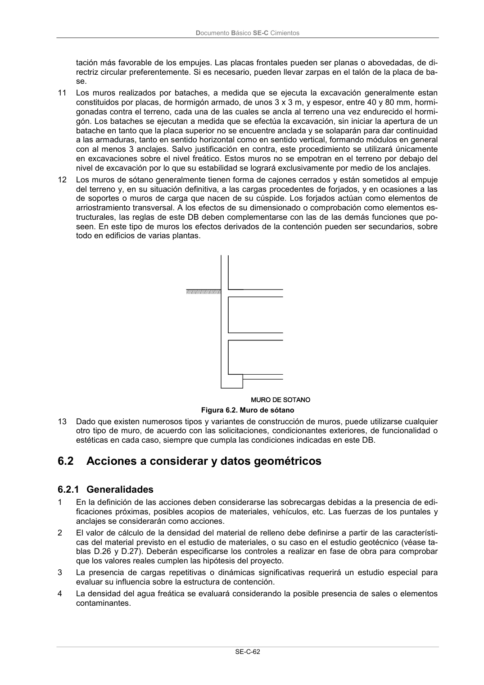

DB-SE-C · 6.2 Acciones a considerar y datos geométricos · 6.2.1 Generalidades · versión 2019-12-20
SHA256: a71133f4b0dca253e45ea3071c70f2a512354bcc5cd841bf89b1a502f567ac5e · página física 67 de 165 · métodos de encabezado
solo si están cotejados.
Formatos: Markdown · JSON de bloques · PDF p. 67 · imagen PNG
Documento Básico SE-C Cimientos SE-C-62 tación más favorable de los empujes. Las placas frontales pueden ser planas o abovedadas, de di- rectriz circular preferentemente. Si es necesario, pueden llevar zarpas en el talón de la placa de ba- se. 11 Los muros realizados por bataches, a medida que se ejecuta la excavación generalmente estan constituidos por placas, de hormigón armado, de unos 3 x 3 m, y espesor, entre 40 y 80 mm, hormi- gonadas contra el terreno, cada una de las cuales se ancla al terreno una vez endurecido el hormi- gón. Los bataches se ejecutan a medida que se efectúa la excavación, sin iniciar la apertura de un batache en tanto que la placa superior no se encuentre anclada y se solaparán para dar continuidad a las armaduras, tanto en sentido horizontal como en sentido vertical, formando módulos en general con al menos 3 anclajes. Salvo justificación en contra, este procedimiento se utilizará únicamente en excavaciones sobre el nivel freático. Estos muros no se empotran en el terreno por debajo del nivel de excavación por lo que su estabilidad se logrará exclusivamente por medio de los anclajes. 12 Los muros de sótano generalmente tienen forma de cajones cerrados y están sometidos al empuje del terreno y, en su situación definitiva, a las cargas procedentes de forjados, y en ocasiones a las de soportes o muros de carga que nacen de su cúspide. Los forjados actúan como elementos de arriostramiento transversal. A los efectos de su dimensionado o comprobación como elementos es- tructurales, las reglas de este DB deben complementarse con las de las demás funciones que po- seen. En este tipo de muros los efectos derivados de la contención pueden ser secundarios, sobre todo en edificios de varias plantas. Figura 6.2. Muro de sótano 13 Dado que existen numerosos tipos y variantes de construcción de muros, puede utilizarse cualquier otro tipo de muro, de acuerdo con las solicitaciones, condicionantes exteriores, de funcionalidad o estéticas en cada caso, siempre que cumpla las condiciones indicadas en este DB. 6.2 Acciones a considerar y datos geométricos 6.2.1 Generalidades 1 En la definición de las acciones deben considerarse las sobrecargas debidas a la presencia de edi- ficaciones próximas, posibles acopios de materiales, vehículos, etc. Las fuerzas de los puntales y anclajes se considerarán como acciones. 2 El valor de cálculo de la densidad del material de relleno debe definirse a partir de las característi- cas del material previsto en el estudio de materiales, o su caso en el estudio geotécnico (véase ta- blas D.26 y D.27). Deberán especificarse los controles a realizar en fase de obra para comprobar que los valores reales cumplen las hipótesis del proyecto. 3 La presencia de cargas repetitivas o dinámicas significativas requerirá un estudio especial para evaluar su influencia sobre la estructura de contención. 4 La densidad del agua freática se evaluará considerando la posible presencia de sales o elementos contaminantes.
